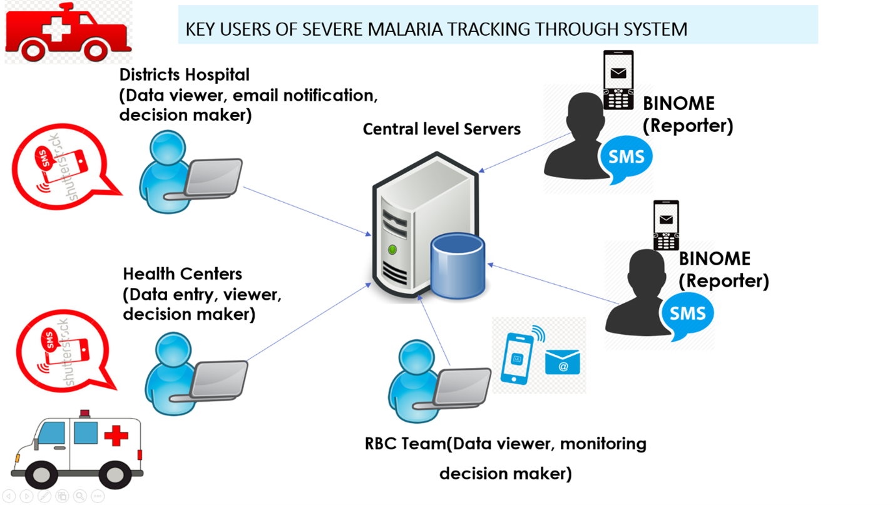
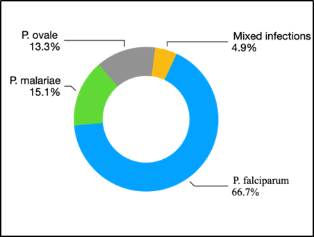
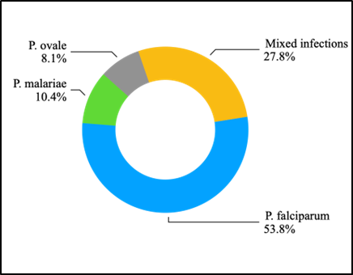
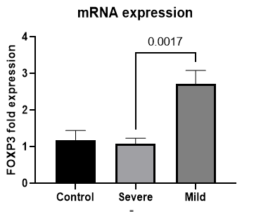

MALARIA
Go to DashboardMaralia
Project outcome: Develop an SMS based system (RapidSMS) to report severe malaria and drug stock out at community level. The severe malaria notification system users are into three groups: 1) reporters who are the CHWs; 2) data viewers and 3) decision makers who are the HC, DH and Ambulance services; and the RBC team who is a constant monitor of the interactions. The central server plays a role of storage and sends notifications and reminders to HCs, DHs and the central level

Additional Projects
The study showed a large discrepancy between mixed infections detected by microscopy and those detected by nested PCR


More than 17% of non-falciparum are missed, while 23 % of mixed infections are misdiagnosed by microscope. Article in preparation
2. Analysis of immune profiles of malaria patients with different clinical presentations
Read more

DATA SCIENCE PROJECT
- E-system developed (for data collection, analysis and display) and currently applied to SARS-Cov-2 data collection
- Data analytics and repository development ongoing
Before working with this theme, you should become familiar with the Bootstrap framework, especially the utility classes.
CAPACITY BUILDING
In addition to the 2 PhD students, short trainings take place at the University of Rwanda School of Health Sciences under TIBA